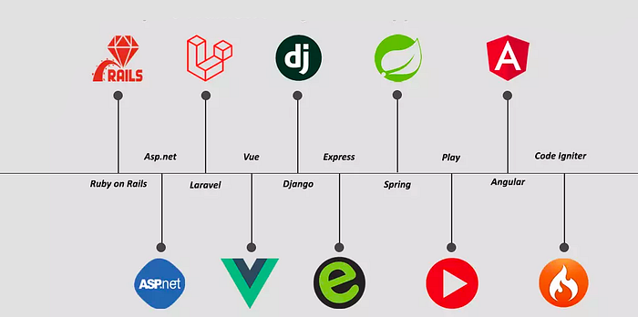

Web Framework
By Jayson Hicarte

What is a Web Framework?
A web framework is a complete software architecture that standardises development by providing libraries, tools and best practices. It helps to structure code, standardise development and reuse proven components.
Historically, the emergence of frameworks has been a response to the increasing complexity of web applications. Initially designed to structure code (e.g. Ruby on Rails in 2004), they have integrated modern practices such as serverlessthe microservicesand even AI (TensorFlow.js).
Types of framework architectures
Model–view–controller (MVC)Many frameworks follow the MVC architectural pattern to separate the data model into business rules (the "controller") and the user interface (the "view"). This is generally considered a good practice as it modularizes code, promotes code reuse, and allows multiple interfaces to be applied. In web applications, this permits different views to be presented, for example serving different web pages for mobile vs. desktop browsers, or providing machine-readable web service interfaces.
Push-based vs. pull-basedMost MVC frameworks follow a push-based architecture also called "action-based". These frameworks use actions that do the required processing, and then "push" the data to the view layer to render the results.An alternative to this is pull-based architecture, sometimes also called "component-based". These frameworks start with the view layer, which can then "pull" results from multiple controllers as needed. In this architecture, multiple controllers can be involved with a single view.
Three-tier organizationIn three-tier organization, applications are structured around three physical tiers: client, application, and database. The database is normally an RDBMS. The application contains the business logic, running on a server and communicates with the client using HTTP. The client on web applications is a web browser that runs HTML generated by the application layer.The term should not be confused with MVC, where, unlike in three-tier architecture, it is considered a good practice to keep business logic away from the controller, the "middle layer".
Types of Web Framework
Server-side- Apache Wicket
- ASP.NET Core
- CakePHP
- Catalyst
- CodeIgniter
- Django
- Express.js
- Flask
- FastAPI
- Grails
- Laravel
- Mojolicious
- Pop PHP Framework
- Phoenix
- Ruby on Rails
- Sails.js
- Seaside (software)
- Symfony
- Spring MVC
- Wt (web toolkit)
- Yii
- Zend Framework